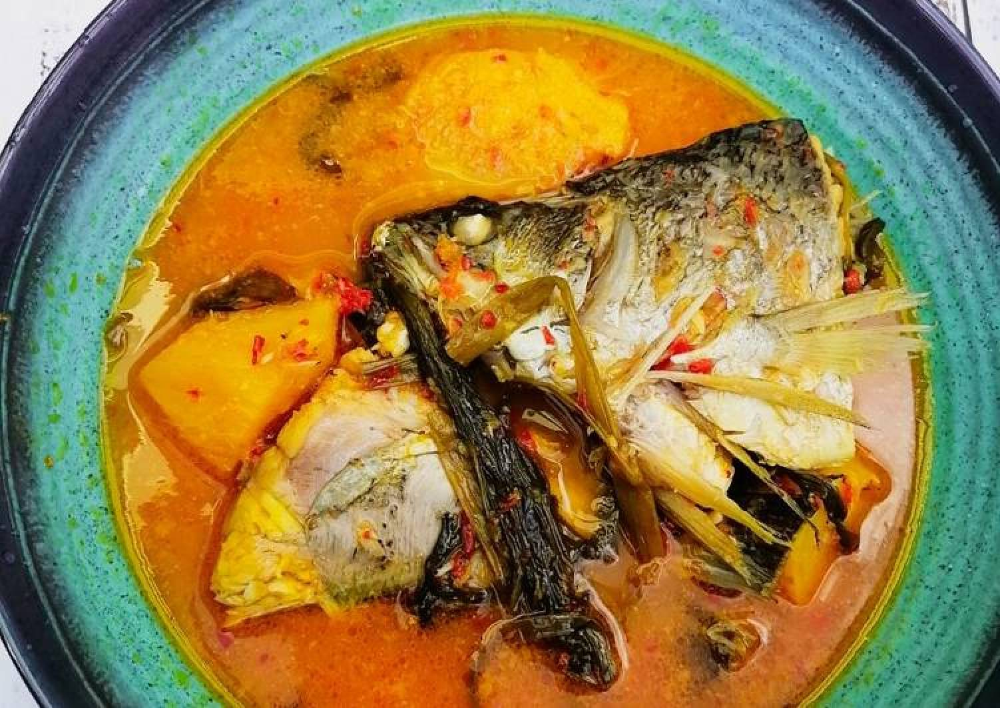
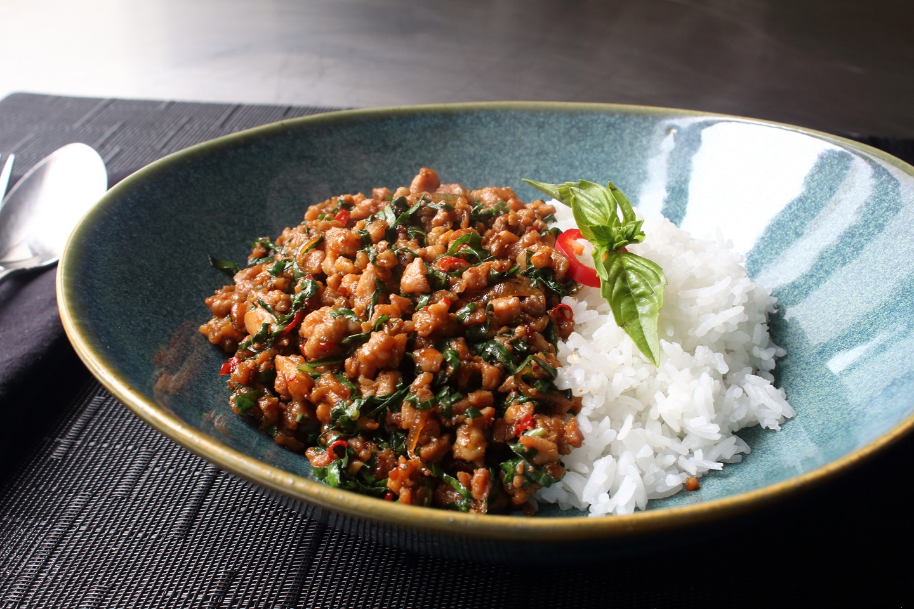

MAIN DISH
It is the highlight or primary dish in a meal consisting of several course

GAENG KEOW WAN
(GREEN CURRY)
One of the signature Thai dishes that almost everyone loves is Thai green curry.
An immaculate blend of green curry paste combined with coconut cream to create a thick curry that goes extremely well with rice.
INGREDIENTS
| Ingredients | Ingredients for Green Curry Paste |
|
1¾ cup coconut milk, divided 50 g (~3 Tbsp) green curry paste 1 cup chicken stock, unsalted 1 lb chicken thigh, boneless, skinless, cut into 1-inch pieces 12 Tbsp palm sugar, finely chopped (can substitute brown or granulated sugar) 1½ - 2 Tbsp fish sauce 3-4 kaffir lime leaves, roughly torn 1½ cup bamboo shoots, canned (can use sliced or strips) 1 cup Thai Basil 1 spur chilies or ¼ red bell pepper, julienned jasmine rice for serving |
2 tsp coriander seeds 1 tsp cumin seeds ½ tsp white peppercorns 15 green Thai chilies 1 tsp salt 15 Thai basil leaves, finely julienned 3 Tbsp lemongrass, thinly sliced 1 Tbsp galangal, finely chopped 2 tsp kaffir lime zest, finely chopped (or sub lime zest) 2 tsp cilantro roots, finely chopped, or 2 Tbsp cilantro stems, finely chopped 3 Tbsp shallots, finely chopped 2 Tbsp garlic, finely chopped 1 tsp fermented shrimp paste (gapi) |
INSTRUCTION :
2. Add curry paste and sauce, stirring constantly over medium heat for about 2 minutes until aromatic. If paste sticks to the bottom of the pan, you can deglaze with a little bit of the remaining coconut milk.
3. Add chicken thigh and stir to mix with the paste. (See below if using chicken breast).
4. Add kaffir lime leaves, chicken stock, remaining 1 cup of coconut milk, palm sugar and 1 Tbsp fish sauce. Bring to a simmer and let simmer gently for 10-15 minutes or until the chicken is fork tender.
5. Once the curry is done simmering, add bamboo shoots and bring to a boil. If you prefer your peppers to be more cooked, add them at this stage. Once boiling, remove from heat.
6. Taste and add more fish sauce and/or sugar as needed.
7. Stir in Thai basil and spur chilies or bell peppers.
8. Serve with jasmine rice
INSTRUCTION FOR CURRY PASTE:
2. Using a mortar and pestle, grind toasted coriander seeds, toasted cumin seeds, and white peppercorns into a fine powder. Remove from mortar and set aside.
3. Cut at least 8 green Thai chilies in half horizontally and, with a paring knife, scrape off and discard the seeds and pith, then finely chop along with the remaining chilies. Note: The seeds and pith are removed from some of the chilies to tone down the heat, you can remove seeds from all of the green chilies if you wish to tone it down even more
4. Add chopped chilies and salt to a heavy-duty mortar and pestle; pound into a fine paste. If the mixture feels too wet at any point, add some of the ground spices to absorb the liquid.
5. Add basil leaves; pound into a fine paste.
6. Add lemongrass, galangal, kaffir lime zest, and cilantro roots; pound into a fine paste.
7. Add shallots, garlic, and any remaining ground spices; pound into a fine paste.
8. Add shrimp paste and pound to mix.

KHA NOM CHIN
(THAI FISH CURRY WITH RICE NOODLE)
One of the most loved dishes in southern Thailand is khanom jeen nam ya (ขนมจีนน้ำยา), a coconut milk minced fish curry.
I’ve eaten khanom jeen nam ya (ขนมจีนน้ำยา) at many restaurants and street food stalls in the south of Thailand,
but I still haven’t found a version better than my mea's.
INGREDIENTS
| Ingredients for curry | Ingredients for curry paste | Eat Curry with |
800 grams skipjack fish 800 ml fresh coconut cream ( About 1500 ml fresh coconut milk all of the curry paste (ingredients below) 2 tbsp salt 20 kaffir lime leaves |
pinch of salt 4 stalks lemongrass 2 fingers turmeric 20 grams Thai dry chilies (it was about 100 chilies) 1 head garlic 1 tsp black peppercorns 1 tbsp shrimp paste |
khanom jeen or noodle rice deep fried chilies lemon basil sweet basil bean sprouts Chinese long-beans Or you can use any kind of fresh raw vegetables or herbs/br> |
INSTRUCTION FOR THE FISH:
2. Remove the fish from the water, drain fully, and leave to cool
3. Once the fish is cool, carefully take off the skin and debone all the meat from the fish, and flake the fish in your fingers so it's almost like deboned minced fish. Discard the bones and skin.
4. Set aside the fish for later.
INSTRUCTION FOR CURRY PASTE:
2. In a mortar and pestle (or alternatively a food processor), start with a pinch of salt, then pound the dry chilies first for about 10 minutes.
3. Then add the lemongrass, turmeric, garlic, and peppercorns, and pound for about 30 minutes until a relatively smooth paste.
4. Once the paste is pretty smooth, the final step is to add the shrimp paste, and pound and mix for another 5 minutes.
5. Set aside.
INSTRUCTION FOR THE CURRY :
2. Stir gently, and only in one direction, making sure all the curry paste dissolves into the coconut milk.
3. Add the minced fish, season with salt, and tear the kaffir lime leaves in half and add them to the curry
4. Keep stirring in one direction, and once it comes to a boil, turn down the heat. You don't want the curry to boil strongly. Keep stirring gently for about 5 minutes once it comes to a boil.
5. Taste test for flavor, you may need to add more salt. You're done.

GHENG SOM
Gaeng som (also sometimes spelled kaeng som แกงส้ม) in Thai means sour curry or sour soup.
In Thailand you’ll find a number of different variations of gaeng som, sour curry, but I’ll be sharing the distinct southern Thai recipe for this delicious dish.
In this post I’m going to share my mea's recipe for gaeng som (แกงส้ม), a fiery, turmeric filled, fish soup.
1. Begin by making the curry paste. Peel the stems off all the chilies, then add them to a blender or food processor.
2. Peel the garlic, and shallots, and cut the turmeric into pieces, and toss them all into the blender.
3. Add about a cup of water, and blend for a few seconds until pureed.
4. NOTE: Be warned that turmeric stains, so don't use a nice blender!1. To prepare the green papaya, first peel the outer green skin, rinse it in water to remove the sap, then shave off thin bite sized pieces of papaya so you have thin wedges. Cut the papaya like you're whittling a piece of wood. Then set aside.
2. For the limes, slice and squeeze them into a separate bowl.
3. Put a big soup pot on the stove and turn to medium heat, and add in all the curry paste you just blended.
4. Add 2 liters of water to the soup, using some of the water to rinse out the blender, and add to the pot.
5. Add the shrimp paste, and stir the soup to make sure the shrimp paste fully dissolves.
6. Take the green papaya, add it all to the soup, stir quickly, then put the cover on to bring to a boil.
7. Once the gaeng som is boiling, gently add the pieces of fish
8. But here's the Mea's cooking trick - don't stir the soup until the fish is fully cooked. If you stir the soup when the fish is still raw, your soup will taste fishy (according to my mom cooking practice).
9. Boil the soup, without stirring, for about 5 - 8 minutes.
10. When the fish is finished cooking, you can stir gently, and then turn off the stove pretty quickly so you don't overcook the fish.
11. Once your heat is off, it's time to season with salt and lime juice. Add some at first, stir gently, taste test, then add more if needed.
12.Taste test until your gaeng som is sour, slightly salt, and extremely spicy.
GHENG SOM
SOUR SPICY FISH CURRY
Gaeng som (also sometimes spelled kaeng som แกงส้ม) in Thai means sour curry or sour soup.
In Thailand you’ll find a number of different variations of gaeng som, sour curry, but I’ll be sharing the distinct southern Thai recipe for this delicious dish.
In this post I’m going to share my mea's recipe for gaeng som (แกงส้ม), a fiery, turmeric filled, fish soup.
INGREDIENTS
| Ingredients for Soup | Ingredients for Soup Paste |
Barramundi fish, or other ocean water fish - My fish was approximately 600 grams, but you could add more or less as you please. 1.5 – 2 litres water, but you could add more or less as you please. 1 green papaya – 700 grams 1 tbsp salt to taste 1 tbsp shrimp paste 10 – 15 tbsp lime juice – I used about 20 limes in total |
1 head garlic 20 grams turmeric (2 – 3 fingers) 2 fingers turmeric 60 grams white bird’s eye chilis, in Thai prik kee noo khao – I counted about 100 chilies 2 shallots 300 ml water - to blend with the curry paste ingredients |
INSTRUCTION FOR THE CURRY PASTE:
2. Peel the garlic, and shallots, and cut the turmeric into pieces, and toss them all into the blender.
3. Add about a cup of water, and blend for a few seconds until pureed.
4. NOTE: Be warned that turmeric stains, so don't use a nice blender!
INSTRUCTION FOR THE SOUP :
2. For the limes, slice and squeeze them into a separate bowl.
3. Put a big soup pot on the stove and turn to medium heat, and add in all the curry paste you just blended.
4. Add 2 liters of water to the soup, using some of the water to rinse out the blender, and add to the pot.
5. Add the shrimp paste, and stir the soup to make sure the shrimp paste fully dissolves.
6. Take the green papaya, add it all to the soup, stir quickly, then put the cover on to bring to a boil.
7. Once the gaeng som is boiling, gently add the pieces of fish
8. But here's the Mea's cooking trick - don't stir the soup until the fish is fully cooked. If you stir the soup when the fish is still raw, your soup will taste fishy (according to my mom cooking practice).
9. Boil the soup, without stirring, for about 5 - 8 minutes.
10. When the fish is finished cooking, you can stir gently, and then turn off the stove pretty quickly so you don't overcook the fish.
11. Once your heat is off, it's time to season with salt and lime juice. Add some at first, stir gently, taste test, then add more if needed.
12.Taste test until your gaeng som is sour, slightly salt, and extremely spicy.

PAD KRA PAO GAI
Thai basil chicken, better known in Thai as pad kra pao gai (ผัดกระเพราไก่ pad ka prao gai), is a contender for the most popular, and the most beloved Thai street food dish of all time.
1. Cut the chicken into small bite sized pieces.
2. Rinse and peel the garlic and chilies, and pound them in a mortar and pestle (alternatively you can just mince them with a knife).
They don't need to be super fine, you just want to bring out the oils and flavors from the garlic and chilies.
3. Pluck a good sized handful of holy basil leaves off the stems.
4. Now it's time to start cooking. Heat your wok on high heat, and add about 1 tablespoon of oil to the pan.
5. When the oil is hot, add the chilies and garlic. Stir fry them for about 20 seconds or so until they get really fragrant,
but don't let them burn or get too dry.
6. Toss in your chicken. Keep stir frying continuously.
At this stage you want to continue to stir and cook your chicken until it's just about fully cooked all the way through
(depending on the size pieces of chicken and how hot your fire is, it should take about 2 - 3 minutes).
If it starts to get dry, add just a tiny splash of water.!
7. Add 1 teaspoon of oyster sauce, ½ teaspoon light soy sauce, ½ teaspoon sugar, and finally a splash of dark soy sauce.
Keep stir frying for about another 30 seconds.
8. Grab a handful of holy basil, toss it into the pan, fold it into the chicken, and then immediately turn off the heat
(if you're using an electric stove, you'll want to remove the pan from the burner).
The holy basil really only needs to cook for about 5 seconds, and it will continue to wilt and cook from the existing heat of the chicken.
This step is important because if you cook the basil for too long, it loses some of its glorious flavor and gets slightly chewy.
PAD KRA PAO GAI
THAI BASIL CHICKEN RECIPE
Thai basil chicken, better known in Thai as pad kra pao gai (ผัดกระเพราไก่ pad ka prao gai), is a contender for the most popular, and the most beloved Thai street food dish of all time.
INGREDIENTS
| Ingredients Basil Chicken |
1 chicken breast (or any other cut of boneless chicken, about 200 grams) 5 cloves of garlic 4 – 10 Thai chilies – when you fry the chilies, they aren’t as spicy 1 tablespoon oil for frying 1 teaspoon of oyster sauce 1/2 teaspoon light soy sauce 1 splash of dark sweet soy sauce (you can use Indonesian kecap manis) 1/2 teaspoon sugar 1 handful of Thai holy basil leaves (really try to get holy basil) |
INSTRUCTION FOR THE BASIL CHICKEN:
2. Rinse and peel the garlic and chilies, and pound them in a mortar and pestle (alternatively you can just mince them with a knife).
They don't need to be super fine, you just want to bring out the oils and flavors from the garlic and chilies.
3. Pluck a good sized handful of holy basil leaves off the stems.
4. Now it's time to start cooking. Heat your wok on high heat, and add about 1 tablespoon of oil to the pan.
5. When the oil is hot, add the chilies and garlic. Stir fry them for about 20 seconds or so until they get really fragrant,
but don't let them burn or get too dry.
6. Toss in your chicken. Keep stir frying continuously.
At this stage you want to continue to stir and cook your chicken until it's just about fully cooked all the way through
(depending on the size pieces of chicken and how hot your fire is, it should take about 2 - 3 minutes).
If it starts to get dry, add just a tiny splash of water.!
7. Add 1 teaspoon of oyster sauce, ½ teaspoon light soy sauce, ½ teaspoon sugar, and finally a splash of dark soy sauce.
Keep stir frying for about another 30 seconds.
8. Grab a handful of holy basil, toss it into the pan, fold it into the chicken, and then immediately turn off the heat
(if you're using an electric stove, you'll want to remove the pan from the burner).
The holy basil really only needs to cook for about 5 seconds, and it will continue to wilt and cook from the existing heat of the chicken.
This step is important because if you cook the basil for too long, it loses some of its glorious flavor and gets slightly chewy.
Rate our recipe
Very Bad
Bad
So So
Good
like it so much !